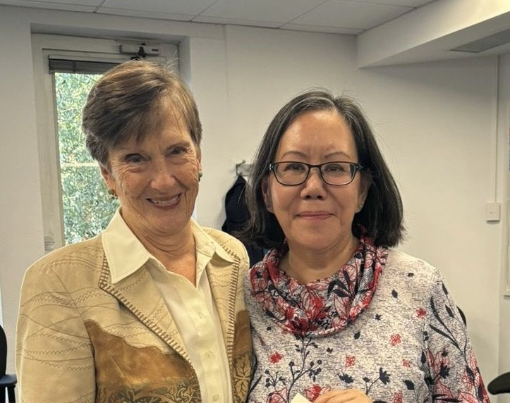

From training in Nancy Kline's Thinking Environment approach to 1:1 coaching and leadership development — and, for those wanting deeper culture change, a tailored package designed around your board's real questions.
As with anything worthwhile, a change in culture requires commitment of time and resources. Short-term fixes may provide temporary solutions to specific problems, but they fail to address the underlying issues responsible for many of them. That investment comes at a cost — and so, in times of budgetary restraint, I work with clients to co-design bespoke packages that offer significant savings while giving greater value and much greater rewards.
This investment has helped clients achieve their organisational development objectives — resulting in organisations where people feel free to speak up, igniting fresh independent thinking and building a culture of inclusivity, collaboration and innovation.
A bespoke package can be made up of a combination of open courses, in-house workshops, and coaching sessions — each addressing a specific need. It is supplemented by a monthly 1:1 coaching session with Mitzi, for you as sponsoring executive, where you can continue to think through your strategy and any challenges.
The open courses provide a foundation of knowledge and skills, and give your organisation 'champions' who can introduce the Thinking Environment approach more widely. The bespoke workshops and coaching are then tailored to focus on the core and critical questions facing the board, a particular team, or an individual.
If you have any questions, book a discovery call — I can share how other organisations have taken advantage of this approach, and look forward to speaking with you.
Most organisations measure activity. Very few can see the quality of thinking. The Meeting Intelligence Index (MII) is a proprietary diagnostic — developed from over twenty years of working with senior teams — that reveals what is actually happening when your people meet, across four dimensions of meeting culture.
The MII is run with organisations as part of a facilitated engagement, producing both individual and team-level reports — giving boards and senior teams a clear, evidenced picture of their meeting culture, and a starting point for change.
"This enables us to think through issues in a more collegiate and collaborative way."Sir Ernest Ryder, Senior President of Tribunals
"I have met only a handful of governance geeks in my 20 years of experience. Mitzi is surely on the top list. The fusion of Governance with thinking practices enabled us to transform our governance from linear to dynamic."Nabil Jamshed, Head of Corporate Governance, Guys and St Thomas' NHS Foundation Trust
"This was a fulfilling and 'work-changing' session. Ranged from chairmen of global organisations to senior regulators and those running smaller agencies. By educating us on how to create a 'thinking environment', which is not only inclusive but promotes fresh and clear thoughts, the meetings became more productive and engaging."Richard Karmel, Managing Partner, Mazars, London

A governance programme co-designed with Nabil Jamshed at Guy's and St Thomas' NHS Foundation Trust received a national CGIUKI award nomination, recognised for bridging Nancy Kline's Thinking Environment with the governance principles of the King Code. Combining behavioural psychology with structural accountability, it strengthened board-level scrutiny and psychological safety in a complex healthcare environment — and remains a model for the values-driven, stakeholder-inclusive governance work I bring to bespoke packages and to my ongoing facilitation with Windsor Leadership.
It's the same spirit that shaped Fulcrum, the cross-sector leaders' network I founded in 2011 — bringing people together to think freely, away from the pressures of public life.
Book a discovery call to explore a bespoke package, or to discuss using the MII with your board or senior team.
Book a discovery call